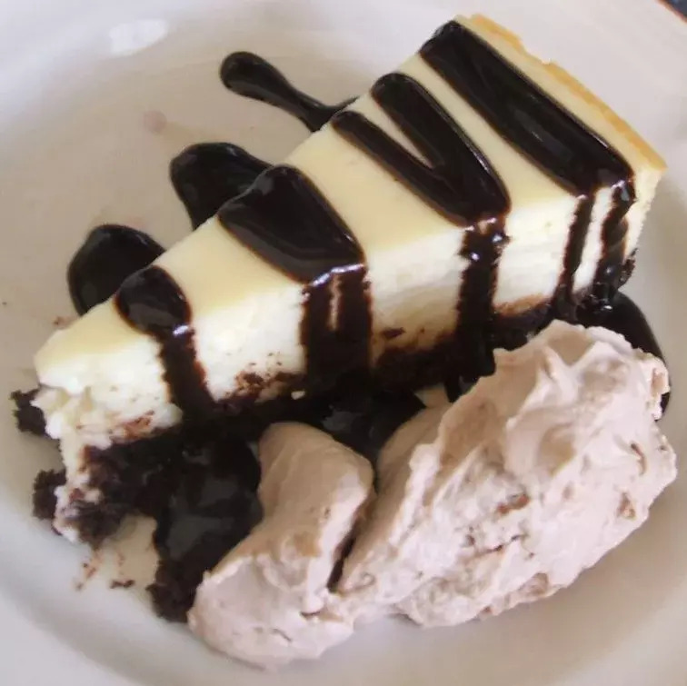

White Chocolate Cheesecake with White Chocolate Brandy Sauce

Description
This is a dense cheesecake that is very smooth and melts in your mouth. The white chocolate brandy sauce tops it off.
I would suggest to garnish it with mint leaves and either raspberries or strawberries.
Ingredients
White Chocolate Cheesecake:
- White chocolate (4 squares (1 ounce))
- Cream cheese, room temperature (3 packets (8 ounces))
- White sugar (¾ cup
- All-purpose flour (¼ cup)
- Eggs, room temperature (3)
- Heavy cream, room temperature (½ cup)
- Vanilla extract (½ teaspoon)
White Chocolate Brandy Sauce:
- White chocolate, finely chopped (2 cups)
- Heavy cream (1 cup)
- Brandy (2 fluid ounces)
Steps
- Preheat oven to 300 degrees F (150 degrees C). Wrap the outside of a 10-inch springform pan with foil. Grease the inside of the pan.
- Place the cream cheese, sugar, and flour in a mixing bowl and cream until light and fluffy. Beat in eggs one at a time, mixing well after each addition. Scrape bowl.
- Melt 4 ounces of the white chocolate. With an electric mixer on low speed, mix melted white chocolate into cream cheese mixture. Keeping electric mixer on low, slowly beat in the vanilla and 1/2 cup of heavy cream. Blend well. Pour mixture into the prepared springform pan.
- Place cheesecake pan in a water bath filled with warm water. Bake at 300 degrees F (150 degrees C) for 50 to 60 minutes, or until center of the cheesecake is just firm. Cool at room temperature for 1 hour. Refrigerate until set before removing from pan.
- To make White Chocolate Brandy Sauce: place chopped white chocolate in a heat-proof bowl. Pour 1 cup cream into a saucepan and bring it to a boil over medium-high heat. Watch carefully so it doesn't boil over. Pour hot cream over chopped white chocolate; let soften for 2 minutes. Stir with a wooden spoon until melted. Add brandy and continue stirring until incorporated. Pour over chilled cheesecake and serve.
Return to home page.